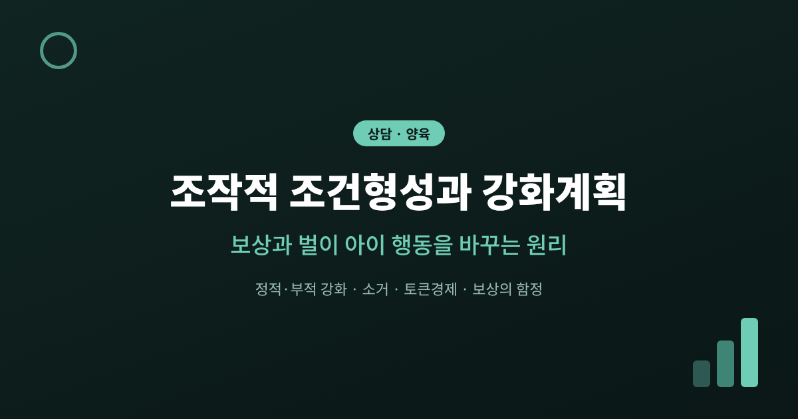
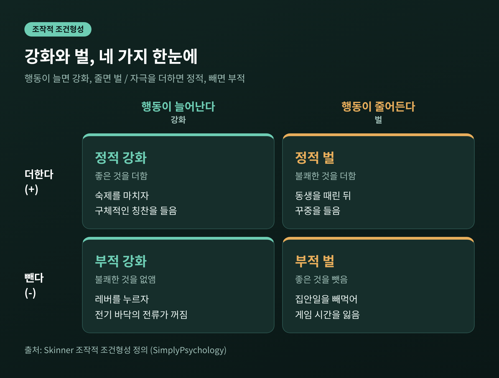
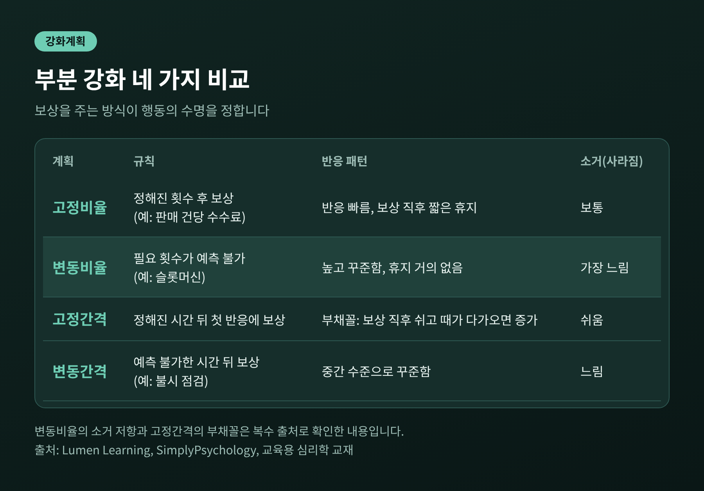
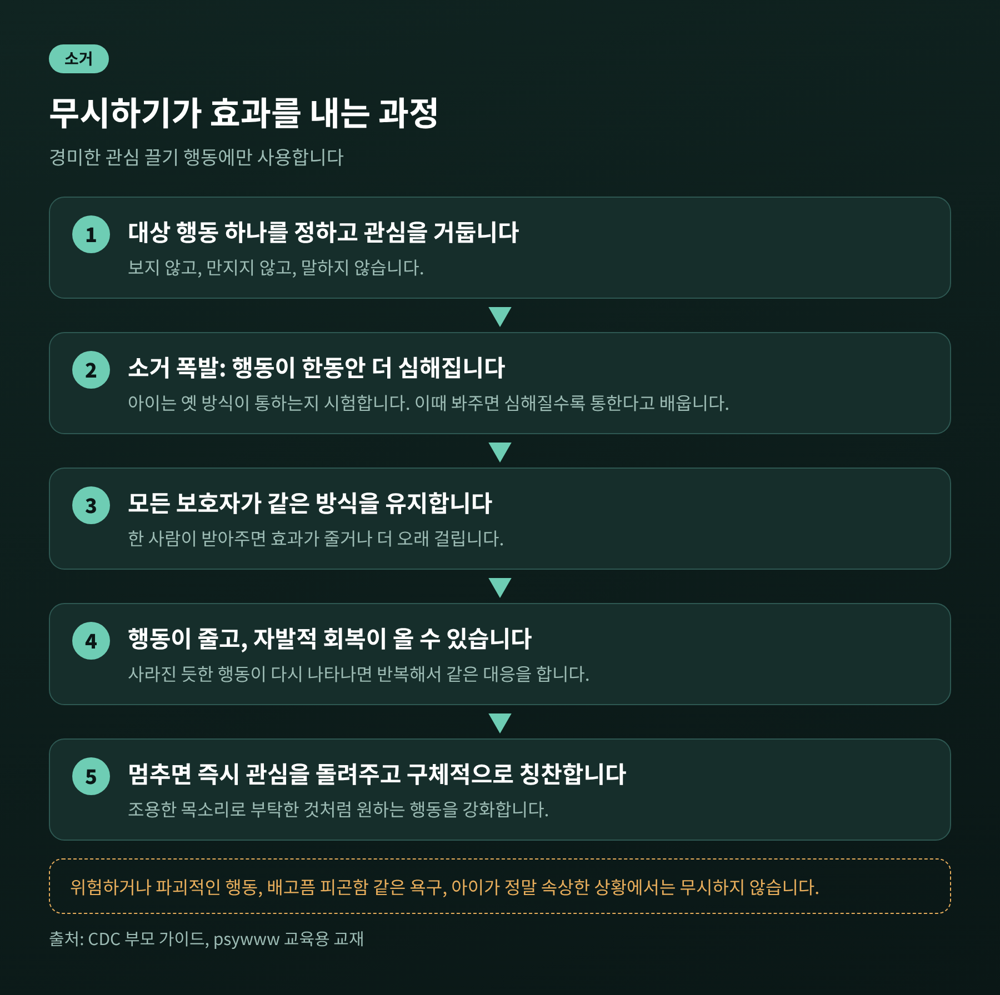
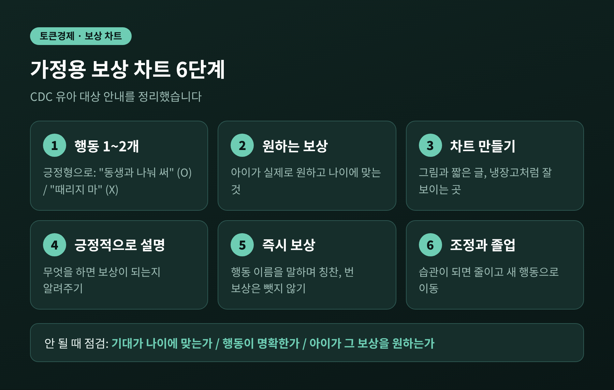
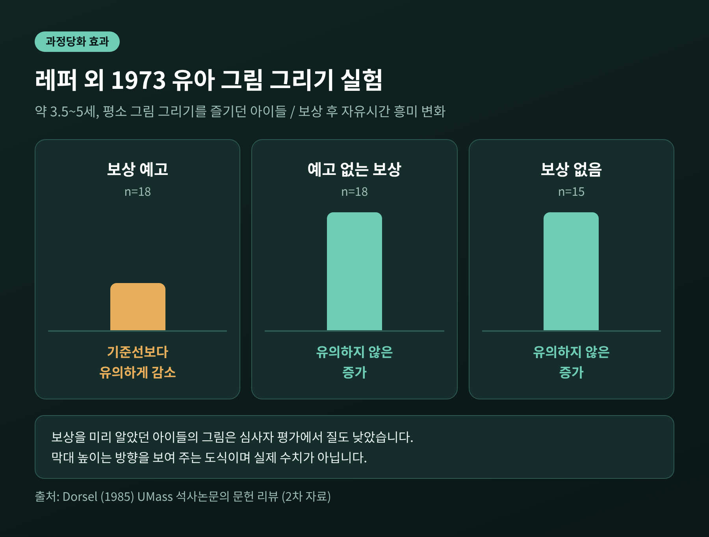
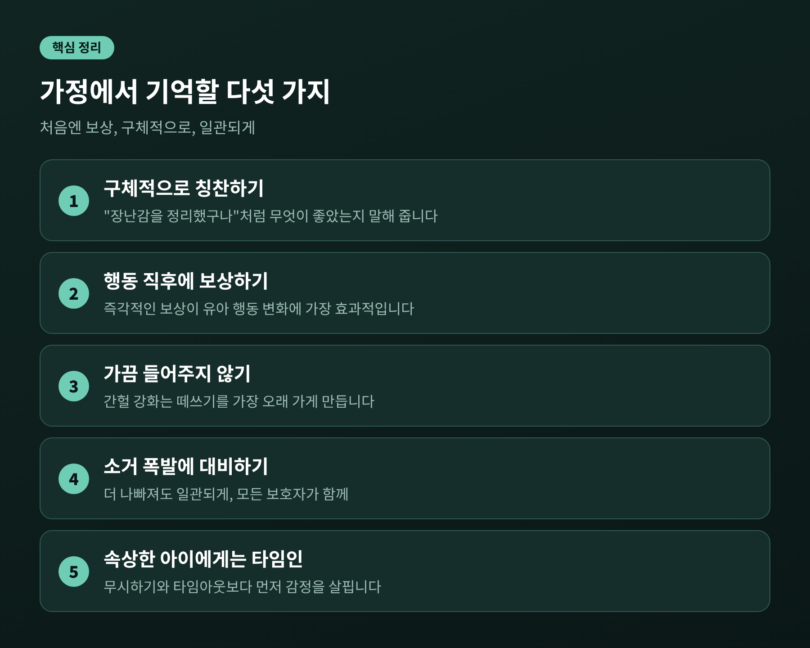

오늘은 스키너의 조작적 조건형성과 강화계획에 대해 이야기해 보려 합니다.
아이가 한 행동 뒤에 무엇이 따라오느냐가 그 행동의 미래를 정한다는 것이 핵심입니다.
가정에서 어떻게 쓰이는지, 그리고 어디에서 한계에 부딪히는지까지 함께 정리해 보겠습니다.
세 줄 요약
B.F. 스키너는 1938년에 조작적 조건형성 상자를 소개했습니다. 쥐가 레버를 누르거나 비둘기가 불이 켜진 원반을 쪼면 먹이가 나오는 장치입니다. 배고픈 쥐는 처음에 우연히 레버를 눌렀다가 먹이알이 떨어지는 것을 겪습니다. 몇 번 반복하면 의도를 갖고 누르기 시작합니다.
이 단순한 구조가 조작적 조건형성의 전부입니다. 행동을 먼저 하고, 그 결과가 뒤따르며, 결과가 다음 행동의 가능성을 바꿉니다.
초인종 소리에 침을 흘리는 파블로프식 조건형성과는 결이 다릅니다. 파블로프의 개는 자극에 반응했고, 스키너의 쥐는 스스로 행동을 골랐습니다. 아이의 일상은 대부분 후자에 가깝습니다. 아이는 어떤 행동을 해 보고, 그 결과를 보고, 다음에 다시 할지를 정합니다.
용어가 낯설어 보이지만 구분 기준은 둘뿐입니다. 행동이 늘어나는가, 줄어드는가. 그리고 무언가를 더하는가, 빼는가.

여기에서 자주 생기는 오해가 하나 있습니다. '부적'이라는 말이 나쁘다는 뜻이 아니라는 점입니다. 정과 부는 자극을 더하느냐 빼느냐를 가리킬 뿐입니다. 부적 강화는 벌과도 다릅니다. 부적 강화는 행동을 늘리고, 벌은 행동을 줄입니다.
예전엔 말을 듣지 않으면 따끔하게 가르치는 것이 당연하다고 여겼습니다. 지금은 연구 결과가 다른 방향을 가리킵니다.
스키너 본인도 벌에 회의적이었습니다. 『과학과 인간 행동』 12장에서 벌은 행동 경향을 즉각 낮추지만, 그 약화가 영구적이지 않을 수 있다고 적었습니다. 그 순간에는 효과가 있어 보여도 지속되지 않는다는 뜻입니다.
체벌에 관한 자료는 더 분명합니다. 미시간 대학 연구진의 2016년 메타분석은 50년간의 연구 75편, 16만 명이 넘는 아동을 살폈습니다. 체벌이 즉각적이든 장기적이든 순응을 높인다는 증거는 없었고, 공격성과 정신건강 문제와 연관되어 있었습니다. 미국소아과학회(AAP)도 2018년 정책성명에서 체벌 금지를 촉구하고, 소리치기나 수치심 주기 같은 가혹한 방식은 단기적으로 효과가 미미하고 장기적으로는 효과가 없다고 밝혔습니다.
벌이 아이에게 알려주는 것은 '하지 말아야 할 것'뿐입니다. 대신 무엇을 해야 하는지는 알려주지 못합니다. 그래서 AAP의 한 소아과 전문의는 "긍정적 행동을 보상한다는 전제에서 시작하는 것이 가장 좋다"고 말했습니다. 벌이 전혀 필요 없다는 뜻은 아닙니다. 위험하거나 남을 해치는 행동에는 타임아웃 같은 분명한 결과가 필요합니다. 다만 시작점이 보상 쪽이어야 합니다.
같은 보상이라도 주는 방식에 따라 행동이 오래 가는 정도가 크게 달라집니다. 이를 강화계획이라고 하며, 스키너와 퍼스터가 1957년에 체계화했습니다.
매번 보상하는 것을 연속 강화라고 합니다. 새로운 행동을 가르칠 때 가장 빠른 방법입니다. 한편 일단 익힌 행동을 유지할 때는 가끔만 보상하는 부분 강화가 쓰입니다. 부분 강화는 두 축으로 나뉩니다. 횟수 기준이냐 시간 기준이냐, 그리고 일정하냐 들쭉날쭉하냐입니다.

일상에서 이 차이는 예상보다 뚜렷하게 나타납니다. 시험 날짜에 맞춰 벼락치기를 하는 아이는 고정간격의 부채꼴 그대로입니다. 반면 게임이 어느 순간에 아이템을 줄지 모르게 설계되어 있다면 변동비율의 힘을 빌린 셈입니다.
다만 가정에서 변동비율을 일부러 활용하라는 이야기는 아닙니다. 이 원리가 훨씬 자주 문제가 되는 곳은 의도하지 않은 순간입니다. 다음 대목이 그 이야기입니다.
마트에서 아이가 떼를 씁니다. 부모는 처음에는 안 된다고 하다가, 주변 시선이 부담되어 결국 과자를 사 줍니다. 다음에도 안 된다고 했다가 어느 날 또 사 줍니다. 아이에게는 '몇 번 더 울면 들어준다'는 변동비율 계획이 생긴 것입니다.
교육용 심리학 교재도 같은 설명을 합니다. 떼쓰기를 가끔 받아주면 간헐 강화 계획이 만들어지고, 아이는 다음번에는 통할지 모른다고 배워서 떼쓰기가 지속됩니다. 그래서 전문가들은 떼쓰기를 절대 강화하지 말라고 조언합니다.
그렇다면 반대로 행동을 줄이려면 어떻게 해야 할까요. 행동을 유지하던 강화물을 없애는 소거입니다. 여기서 부모가 꼭 알아야 할 현상이 있습니다.

소거를 시작하면 행동이 곧바로 사라지지 않고 오히려 한동안 심해집니다. 이를 소거 폭발이라고 합니다. 아이는 옛 방식이 아직 통하는지 시험하며 더 길게, 더 크게 칭얼댑니다. 미국 질병통제예방센터(CDC)도 무시하기를 시작할 때 "행동이 더 나빠질 것에 대비하라"고 안내합니다. 이때 봐주면 아이는 심해지면 통한다고 배웁니다. 지금까지의 노력이 오히려 강화 계획을 더 강하게 만드는 셈입니다.
또 하나 있습니다. 사라진 듯하던 행동이 얼마 뒤 다시 나타나는 자발적 회복입니다. 소거는 여러 번 반복해야 완전히 자리 잡을 수 있습니다.
CDC가 제시하는 무시하기의 요령은 구체적입니다.
한계도 분명히 있습니다. 무시하기는 칭얼거림, 끼어들기 같은 경미한 관심 끌기 행동에만 씁니다. 배고픔이나 피곤함에서 나온 행동, 아이가 정말 속상한 상황에서는 쓰지 않습니다. 위험하거나 파괴적인 행동은 무시해서는 안 되며, 바로 멈추게 하고 타임아웃 같은 결과를 고려해야 합니다.
토큰경제는 목표 행동을 하면 토큰(스티커, 별 등)을 주고, 이를 모아 원하는 보상과 바꾸는 방식입니다. 학술 문헌에서는 목표 행동, 토큰, 교환용 보상, 그리고 세 가지 강화계획으로 구성된다고 설명합니다. 가정에서는 보상 차트가 가장 흔한 형태입니다.
2022년에 발표된 메타분석은 유치원부터 초등 5학년까지 일반·특수학급에서 시행된 토큰경제 24편을 분석했고, 두 유형 모두에서 큰 효과크기를 보고했습니다. 다만 같은 문헌 분야의 한 리뷰는 구성요소가 자주 누락되거나 모호하게 기술된다고 지적합니다. 2000년부터 2015년까지의 연구 96편 가운데 핵심 구성요소를 재현 가능하게 기술한 것은 18편, 19%에 그쳤습니다. 효과는 있어 보이지만 '어떻게 설계했는지'가 결과를 좌우한다는 신호입니다.
CDC의 보상 차트 안내는 이 설계 원리를 가정 수준으로 옮겨 놓은 것입니다.

잘 되지 않을 때는 세 가지를 점검하라고 합니다. 기대가 나이에 맞는가, 행동이 충분히 명확한가, 아이가 정말 그 보상을 원하는가. 강화는 결국 아이의 눈으로 판단된다는 점이 중요합니다.
이 안내가 유아를 대상으로 한다는 점은 기억해 두시길 권합니다. 연령이 올라가면 같은 틀을 그대로 쓰기 어렵습니다.
칭찬의 모양도 효과를 가릅니다. CDC는 "잘했어"보다 "장난감을 정리했구나"처럼 무엇이 좋았는지를 말해 주라고 합니다. 막연한 칭찬은 아이에게 무엇을 반복해야 하는지 알려주지 못하기 때문입니다. 사회적 보상, 곧 하이파이브나 함께 책을 읽는 시간은 무료이고 자주 줄 수 있어서 물질 보상만큼 강력한 경우가 많다고도 합니다.
보상이 늘 득이 되는 것은 아닙니다. 1973년 레퍼, 그린, 니스벳의 유명한 실험이 이를 보여 줍니다.
만 3세 반에서 5세 사이 유아 가운데 평소 자유시간에 그림 그리기를 즐기던 아이들을 세 조건으로 나눴습니다. 보상을 미리 알고 그림을 그린 집단, 보상 이야기 없이 그렸다가 나중에 상을 받은 집단, 아무 보상도 없는 집단입니다.

결과는 이렇습니다. 보상을 미리 알고 그린 아이들은 이후 자유 시간에 그림에 대한 흥미가 기준선보다 유의하게 줄었고, 심사자가 본 그림의 질도 낮았습니다. 나머지 두 집단은 유의한 변화가 없었습니다. 놀이가 '상을 받기 위한 일'로 바뀐 셈입니다. 이를 과정당화 효과라고 부릅니다. (이 실험은 후속 문헌을 정리한 2차 자료로 확인했음을 밝혀 둡니다.)
1999년 데시, 코스트너, 라이언의 메타분석은 128개 연구를 종합해 같은 방향의 결과를 얻었습니다. 보상이 자유 선택 상황의 내재동기를 낮췄고, 참여에 주는 보상은 d=-0.40, 완수에 주는 보상은 d=-0.36이었습니다. 반면 언어적 긍정 피드백은 d=0.33으로 오히려 높였습니다. 또 물질 보상은 대학생보다 아동에게 더 해로웠습니다.
여기서 균형을 잡아야 합니다. 후속 문헌을 정리한 자료에는 예상하지 못한 보상이나 행동과 무관하게 주는 보상에서는 감소가 나타나지 않았고, 매우 매력적인 보상은 다른 양상을 보였다는 결과도 함께 실려 있습니다. 기제도 완전히 풀리지는 않았습니다. 그러니 '보상은 나쁘다'가 아니라 '조건에 따라 달라진다'가 정확한 표현입니다.
이를 가정에 옮기면 이렇습니다.
조작적 조건형성은 강력하지만 만능은 아닙니다. 솔직히 한계를 인정하는 편이 오히려 유용합니다.
반두라는 사람이 직접 강화를 받지 않고도 남을 보고 배운다는 점을 보였습니다. 톨먼과 혼지크의 실험에서는 쥐가 보상 없이도 미로를 학습했고, 보상은 학습 자체보다 수행에 영향을 주었습니다. 셀리그먼은 아이가 상황을 통제할 수 없다고 느낄 때 행동이 달라진다는 점, 즉 학습된 무력감을 보였습니다. 쥐와 비둘기의 결과를 사람의 마음과 문화에 그대로 옮기기 어렵다는 비판도 있습니다.
그리고 보상을 쓰는 일에는 윤리의 문제가 따릅니다. 보상이 아이를 조종하는 도구가 되어서는 안 됩니다. 아이의 행동만 보지 말고, 그 행동 뒤에 있는 감정과 필요를 함께 읽어야 합니다. 앞서 CDC가 속상한 아이에게는 무시하기 대신 시간을 함께하는 '타임인'을 권하는 이유도 여기에 있습니다.
타임아웃에서도 같은 원리가 작동합니다. CDC는 위험하거나 해로운 행동, 가족 규칙 위반, 한 번 경고한 뒤에도 따르지 않을 때 쓰라고 안내합니다. 순서는 이렇습니다. 질문이 아닌 서술로 경고하고, 약 5초를 기다립니다. 이유는 한 번만 짧게 설명합니다. 시간은 나이 1세당 1분입니다. 5초간 조용해지면 끝내고, 다음에 잘한 행동을 칭찬합니다.
눈여겨볼 점은 마지막 항목입니다. 벌 같은 절차도 끝은 칭찬, 즉 강화로 닫힙니다. 그리고 지키지 못할 타임아웃은 위협하지 않는 것, 매번 같은 방식으로 쓰는 것이 핵심입니다. AAP의 말대로 "핵심은 일관되게 지키는 것"입니다.
정리하면 이렇습니다.
조작적 조건형성은 아이를 움직이는 기술이라기보다, 아이가 무엇을 배우고 있는지를 읽는 렌즈에 가깝습니다. 아이는 어른이 가르치려는 것이 아니라 행동 뒤에 실제로 일어난 일에서 배웁니다. 가끔 들어준 떼쓰기, 늘 받는 보상, 관심이 따라오는 칭얼거림. 모두 아이에게는 분명한 가르침입니다.
"처음엔 보상을 주고, 구체적으로 칭찬하고, 한 번 정했으면 일관되게."
물론 가정마다 아이의 기질과 형편이 다르고, 위의 틀이 모든 아이에게 같은 속도로 통하지는 않습니다. 같은 방법을 일관되게 써 보아도 행동이 나아지지 않거나, 아이의 분노·불안이 심해지거나, 부모님 스스로 한계를 느끼신다면 혼자 감당하지 않으셔도 됩니다. 그럴 때는 아동 청소년 상담 전문가나 소아청소년과, 정신건강의학과 등 전문가와 상의해 보시길 권합니다. 이 글은 일반적인 정보이며 개별 진단이나 치료를 대신하지 않습니다.
다음에 아이가 떼를 쓰거나 칭얼댈 때, 잠시 숨을 고르고 스스로에게 물어보시면 좋겠습니다. 지금 이 행동 뒤에 나는 무엇을 보여 주고 있는가.
